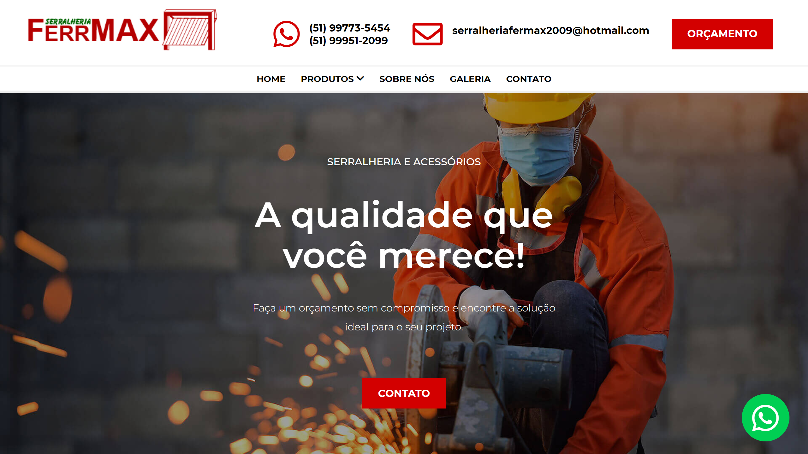

Ferrmax
Primeiro site desenvolvido para uma Agência. Com certeza foi onde aprendi a fazer a maioria das coisas que eu nem sequer sabia serem necessárias, pois não fazia quando programava por Hobby
Saber mais


Meu amor pelos códigos em forma de portfólio
Antony dos Reis
Fique a vontade
Se quiser saber mais ou falar comigo entre em contato
Nasci em Novo Hamburgo/RS, e desde sempre tive uma certa admiração pela programação. Poder ver um "texto", mesmo sendo ele escrito em um simples bloco de notas se transformando em qualquer coisa que eu quisesse me fascinava. Comecei usando Javascript e C# para programar jogos digitais no Unity, Minha paixão estava lá, e junto disso meu tempo foi muito investido aprendendo a lógica da programação.
O tempo passou e junto dele desenvolvi muitos projetos e muito conhecimento também, porém, chegava a hora de me arriscar em outras linguagens, e foi aí que conheci o HTML. Descobri que assim como meus códigos poderiam fazer meus jogos, eles também poderiam criar sites e sistemas web, e essa também se tornou uma área que me chamou muita atenção. A partir dali, meus esforços passaram a ser o desenvolvimento frontend, algo que me fez de certa forma a decidir cursar uma faculdade na área. Porém, algo me colocou em um curso de Marketing, e que mesmo parecendo totalmente diferente e desconexo, me inseriu no mercado das agências, uma coisa que se tornou também uma paixão.
A possibilidade de construir algo com minhas próprias mãos, algo que todos usariam, mas onde sempre teria o meu toque me trazia orgulho e cada vez mais admiração pelos códigos. Hoje sendo um desenvolvedor web front end, me considero também um artista em constante aprendizado, onde os códigos são a minha arte e os teclados os meus pinceis. Tenho paixão pelo que faço, e sei que essa paixão e esse conhecimento podem ajudar tantos quanto eu puder me disponibilizar. Um desses pode ser você, entre em contato e vamos conversar.
Primeiro site desenvolvido para uma Agência. Com certeza foi onde aprendi a fazer a maioria das coisas que eu nem sequer sabia serem necessárias, pois não fazia quando programava por Hobby
Saber mais
Meu segundo site feito profissionalmente foi o próprio site da agência em que trabalho. Fui encarregado de refazer um site que feito na Wix em programação pura, para ganho de desempenho de carregamento e SEO
Saber maisAqui foi onde conheci os cronogramas e prazos. Algo que me fez aprender a trabalhar com rapidez, mas também a usar métodos mais ágeis
Saber maisMuito aprendizado na parte de pré-processadores CSS, algo que praticamente me viciou e, em simultâneo, me fez trabalhar mais rápido. Este foi o site em que desenvolvi em menos horas
Saber mais
Estou disposto a ajudar no desenvolvimento dos sites de sua agência.

Disposto a realizar o seu site, ou do seu negócio